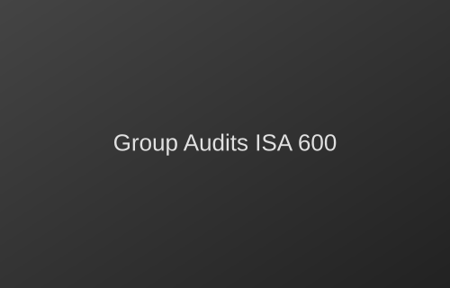

Our Services

Audit & Assurance
Business Services

We combine technical expertise and sector knowledge to deliver reliable assurance and practical insights that create value.
At Reckoner Audit, we deliver trusted audit and tax services tailored to the needs of not-for-profit and corporate organizations. Combining sector expertise with a commitment to excellence, we provide clear, practical solutions that strengthen compliance, governance and financial performance.
Built on trust, transparency and long-term relationships, our experienced team works closely with clients to deliver reliable insight, professional assurance and lasting value.
Learn more about usWe provide trusted expertise and tailored solutions across a diverse range of sectors.
We provide trusted expertise and tailored solutions across a diverse range of sectors.
We offer several types of audits, including:
Timelines vary depending on the size and complexity of your organization, but most audits are completed within a few weeks once fieldwork begins.
Fees depend on scope, sector and organizational size. We provide a clear, fixed quote after an initial consultation.
We provide a preparation checklist covering the records, reconciliations and supporting documents your team should have ready before fieldwork starts.
We serve manufacturing, healthcare, financial institutions, e-commerce and not-for-profit organizations, among others — see our Sectors section for details.
We provide trusted expertise and tailored solutions across a diverse range of sectors.
